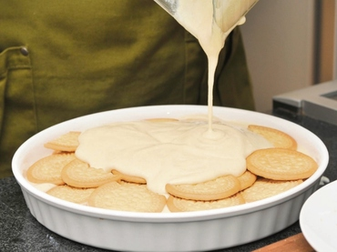

Carlota de limon

Ingredientes
El jugo de 5 limones
1 lata de leche evaporada
1 lata de leche condensada
2 paquetes de Galletas Marias
Elaboracion
Licua, las leches junto al jugo de limón y Reserva.
En un refractario acomoda una capa de galletas cubriendo todos los huecos y vacía un aparte de la mezcla licuada.
Repite el mismo proceso hasta terminar con una capa de la mezcla.
Refrigera por lo menos 2 horas y Sirve a la hora que lo van a comer.
